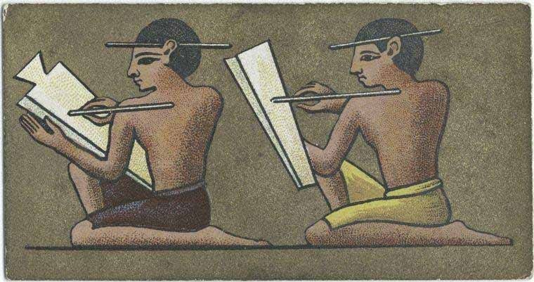

Writing is a technology


Ignorant I was when I thought that writing was not a technological product and I hope you don't think like that. Writing is a technology, one that had and still has the most powerful impact on society. Writing allowed the born of big civilizations like Egyptians and Romans. After verbal language that also can be seen as technological innovation, writing is the result of a human being trying to create another medium of communication and this started with our grandparents trying to illustrate their environment by drawing. writing is a custom form of drawing specially designed to ease communication. Now established States and countries are the outcomes of writing technology which is the only one technology that metamorphosed itself and adapted itself to changes and new technological innovations. We already have some scientists like George Lakoff that studied the impact of verbal language on our way of thinking and how such verbal languages as Arabic, English, French, Wolof highlight how our brain process information. I am almost sure that writing also impacted our Brain evolution and I guess that it structured better our thinking and has other benefits that we only can discover if we study its impact on the evolution of human beings' neural anatomy.
Yes, writing is a technology, and it's the one at the ground base of all these innovations that we are benefiting from now. Gutenberg and the creation of education with schools popularized this technology but as it is always the case when a technological product leaves early adopters to reach the mass, things get simplified. Writing is now seen as something not useful, it is underrated in front of other forms of communication like talking, pictures, video …. Books that were the main medium of writing seem also to a HAS BEEN thing. But whatever on can say WRITING IS A TECHNOLOGY. it is not easy to come with the best one.